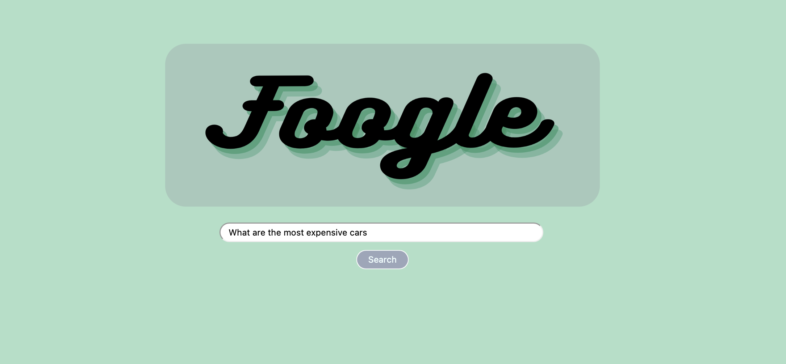
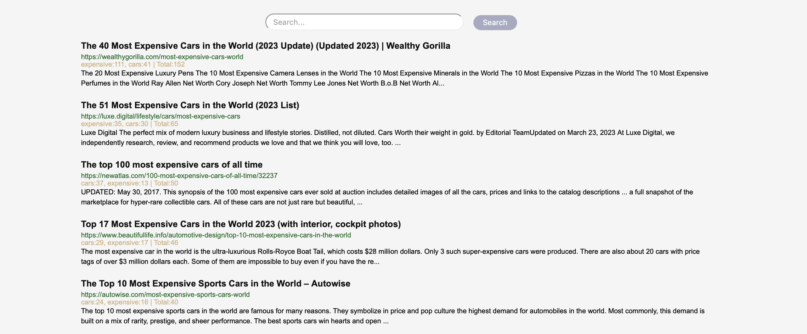

Creation of a search engine that compiles the results from other major search engines, such that it enables refined secondary searches, reduces the bias of search results by introducing a keywork ranking algorithm, and removes ad results.
Overview
Foogle is a search engine aggregator, which compiles the results from other widely used search engines, stores the results into a mySQL database, and then displays the most relevant results by keyword to the consumer.
Why is this technology necessary? Traditional search engines, being from profit-oriented companies, prioritize displaying ads in search results. Moreover, they utilize ranking algorithms that are typically influenced by business interests. Foogle aims to overcome these limitations by using a word frequency algorithm that not influenced by business motives. Additionally, Foogle filters out ads from the compiled results, ensuring a more relevant and unbiased search experience. Lastly, by storing the search results from other search engines in a database, Foogle enables secondary searches using natural language processing and keyword ranking, resulting in more robust and accurate searches.
Technical Details:
Tech Stack: Python (Asyncio, Aiohttp, BeautifulSoup, MySQL Connector, NLTK), MySQL, Flask, HTML / CSS
- Retrieve query from end-user
- Send HTTP requests from Google, Bing, Yahoo, and DuckDuckGo to obtain URLs
- Perform ad and duplicate filtering
- Clean up and manipulate HTML text data to retrieve wanted information
- Populate the database with the information
- Retrieve websites from the database based on the end-user query relevance with the text from the URL using Natural Language Processing techniques
- Retrieve keywords from the end-user query by removing stopwords
- Count the keywords within the text of the retrieved websites
- Rank the retrieved websites based on keyword counts
- Display the results to the end-user on the website
- HTML / CSS
- Flask Web Framework
Results
Please review the presentation slide deck for a summary of the search engine implementation: Slides
 Want to connect?
Connect with me through LinkedIn, or reach out to me via email or phone number.